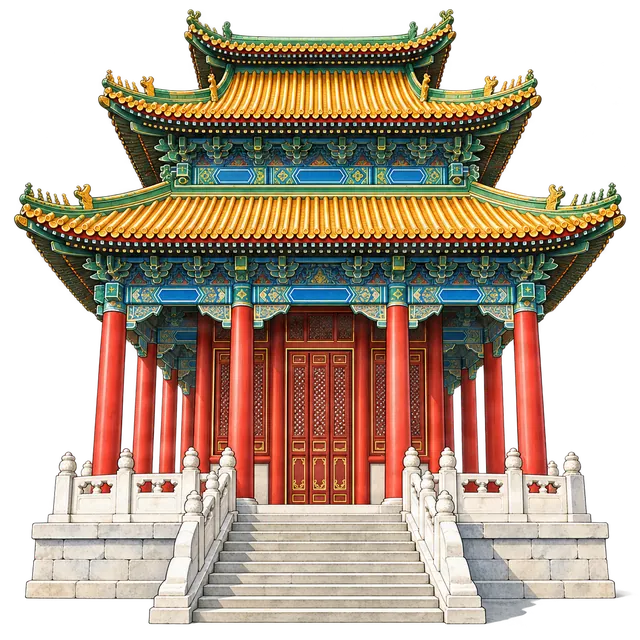

Jingshan Park · free guide
Jingshan Park: the best view of the Forbidden City
Last checked:

Where is the best view of the Forbidden City?
The best view is from Wanchun Pavilion on top of Jingshan Hill, 94.2 metres above sea level and roughly 45 metres above the streets around it, directly north of the palace: a 10–20 minute climb on stone paths and steps gives you the whole run of golden roofs from the Gate of Divine Might down to the Meridian Gate. Entry costs ¥2, and the park's South Gate is just across the road from the Forbidden City's north exit.
Wanchun is the middle and highest of the hill's five pavilions, the one with three tiers of yellow-glazed roofs edged in green. Stand on its south terrace and the palace lies along Beijing's north–south Central Axis, which UNESCO inscribed as a World Heritage property in 2024. Turn round and the same axis continues north to the Drum and Bell Towers.
How much does Jingshan Park cost, and do I need to book?
- Adult ticket: ¥2; students ¥1. During the park's cultural seasons (usually spring and midsummer) the adult price is ¥10.
- Book online up to 7 days ahead on the official "Visiting Beijing Parks" WeChat account, with your passport.
What are the opening hours?
- 1 April – 31 October: 06:00–21:00, last entry 20:30.
- 1 November – 31 March: 06:30–20:00, last entry 19:30.
- Some halls inside the park keep shorter hours.
Is Jingshan Park worth it after the Forbidden City?
Yes, and the timing works: the Forbidden City's main visitor exit, the Gate of Divine Might, is just across the road from Jingshan's South Gate. After two or three hours walking through courtyards at ground level, the hilltop shows you how the whole palace fits together, which is hard to picture from inside. It is also open long after the palace closes (16:30 or 17:00 depending on the season), so you can rest, then climb for the late light.
When is the best time to go up?
Late afternoon is the favourite: the sun drops in the west and lights the palace roofs from the side. Arrive about 30 minutes before sunset in spring and autumn, when the terrace gets crowded. Early morning, soon after the 06:00 or 06:30 opening, is quieter and you will share the paths with locals doing tai chi and singing. Clear days after wind or rain give the sharpest views across the city.
How long do you need in Jingshan Park?
- About 50 minutes for the hilltop and the memorial site: the shortest route in the Penyola guide is 52 minutes.
- About 1 hour 40 minutes to add the pavilions along the ridge and Shouhuang Hall at the north end of the park.
- About 2½ hours to see all five pavilions, the halls and the gardens at an easy pace.
The times assume walking at an easy pace plus ten minutes at each sight.
What else is there to see on the hill?
Four smaller pavilions flank Wanchun on the ridge, two on each side: the inner pair with octagonal roofs, the outer pair with round ones. On the eastern slope, two stone steles mark where the last Ming emperor, Chongzhen, died in 1644 as rebel armies entered Beijing; the scholar tree beside them is a replacement planted in 1996. At the north end of the park, Shouhuang Hall once held the Qing emperors' ancestral portraits.
How do I get to Jingshan Park?
- From the Forbidden City: leave by the Gate of Divine Might and cross the road to the South Gate.
- By bus: 58, 101, 103, 109 or 124 to Gugong, then walk about 200 metres to the South Gate.
- By metro: Line 8 to National Art Museum, then bus 109 or 191; or Line 1 to Tian'anmen West, then bus 5 to Xibanqiao, by the West Gate.
- For a taxi: show the driver 北京市西城区景山西街44号 景山公园.
Is there a free audio guide for Jingshan Park?
Yes. The Jingshan Park guide in Penyola is free and complete: a hand-drawn map of the park, the pavilions, halls and memorials with narrated stories in English, and three suggested walks. It works without a phone signal once the app is installed. You can try it in your browser before you go.
More planning guides
Sources
Checked on these official pages on 9 November 2026:
Photo credits
Photos in our videos for this page, from Wikimedia Commons:
- Jingshan (Coal Hill) Qiwang Tower (9869109674) by Gary Todd, CC0
- Wanchun Pavilion, Jingshan Park, Beijing - November 2016 - 113 by Another Believer, CC BY-SA 4.0
- Views of the Forbidden City from Jingshan Park 1 by EditQ, CC BY-SA 4.0
_Qiwang_Tower_(9869109674).jpg){kind=link}